Cheap cha chaan teng in Hong Kong 茶餐廳
32 places, from HK$32, ranked by Value Score.
 Kam Wah Cafe金華冰廳 · Mong Kok$38
Kam Wah Cafe金華冰廳 · Mong Kok$38 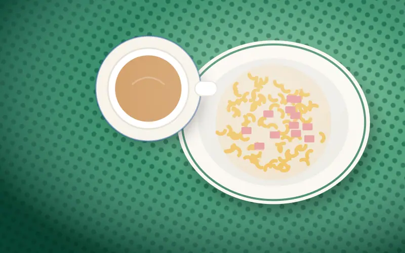
Kam Fung Cafe金鳳茶餐廳 · Wan Chai$36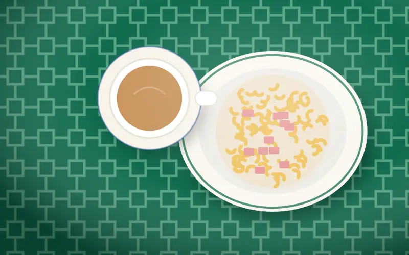
Sing Heung Yuen勝香園 · Central$40 Australia Dairy Company澳洲牛奶公司 · Jordan$42
Australia Dairy Company澳洲牛奶公司 · Jordan$42  Kam Kee Cafe金記冰室 · Sham Shui Po$44
Kam Kee Cafe金記冰室 · Sham Shui Po$44  Sai Kung Café & Bakery西貢茶餐廳餅店 · Sai Kung~$32
Sai Kung Café & Bakery西貢茶餐廳餅店 · Sai Kung~$32 Sun Heung Yuen新香園（堅記） · Sham Shui Po~$40
Sun Heung Yuen新香園（堅記） · Sham Shui Po~$40 Hoi On Cafe海安咖啡室 · Sheung Wan~$38
Hoi On Cafe海安咖啡室 · Sheung Wan~$38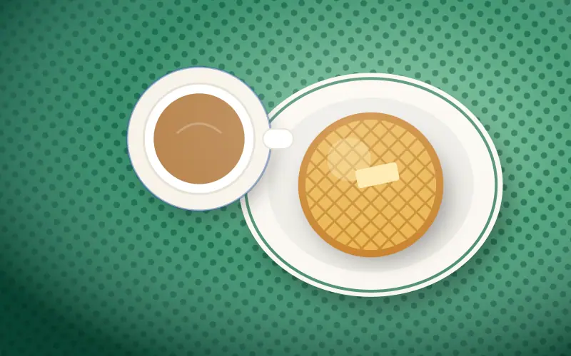
Cheung Hing Coffee Shop祥興咖啡室 · Happy Valley~$34 Capital Cafe華星冰室 · Wan Chai$48
Capital Cafe華星冰室 · Wan Chai$48 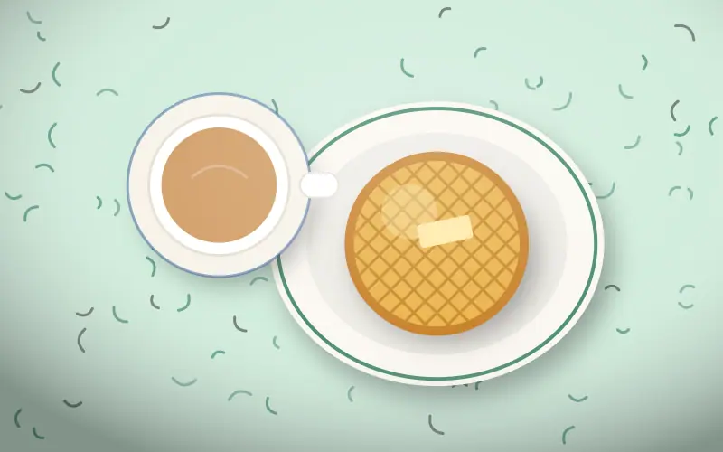
Lan Fong Yuen蘭芳園 · Central$45 Tai Po Hui Market Cooked Food Centre大埔墟街市熟食中心 · Tai Po~$35
Tai Po Hui Market Cooked Food Centre大埔墟街市熟食中心 · Tai Po~$35 Hokkaido Dairy Farm Milk Restaurant北海道牧場餐廳 · Mong Kok$42
Hokkaido Dairy Farm Milk Restaurant北海道牧場餐廳 · Mong Kok$42  Shau Kei Wan Cooked Food Centre筲箕灣街市熟食中心 · Shau Kei Wan~$36
Shau Kei Wan Cooked Food Centre筲箕灣街市熟食中心 · Shau Kei Wan~$36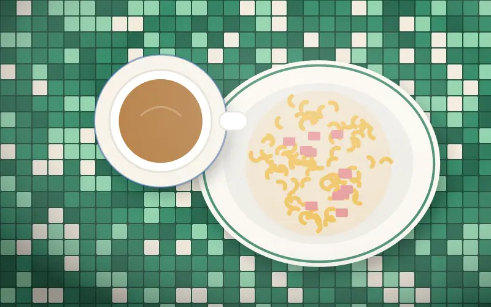
Shui Kee Coffee瑞記咖啡 · Central~$48 Tsui Wah (Prince Edward)翠華（太子） · Prince Edward$36
Tsui Wah (Prince Edward)翠華（太子） · Prince Edward$36  Luen Wo Hui Cooked Food Centre聯和墟街市熟食中心 · Fanling~$35
Luen Wo Hui Cooked Food Centre聯和墟街市熟食中心 · Fanling~$35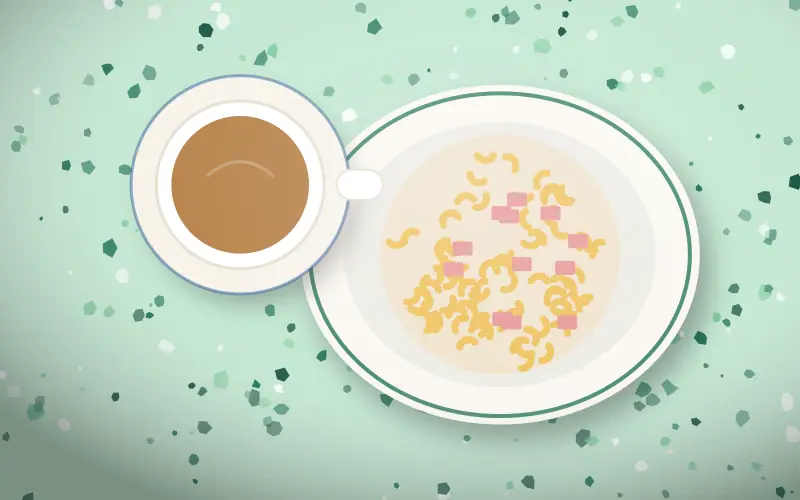
Shek Wu Hui Cooked Food Centre石湖墟熟食中心 · Sheung Shui~$45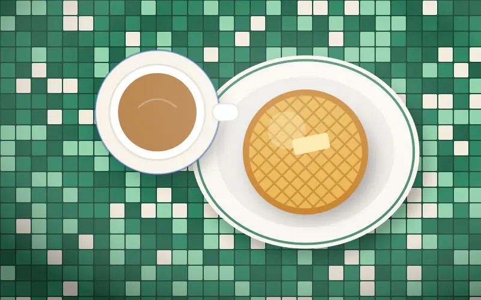
Ngau Chi Wan Market Cooked Food Centre牛池灣街市熟食中心 · Ngau Chi Wan~$45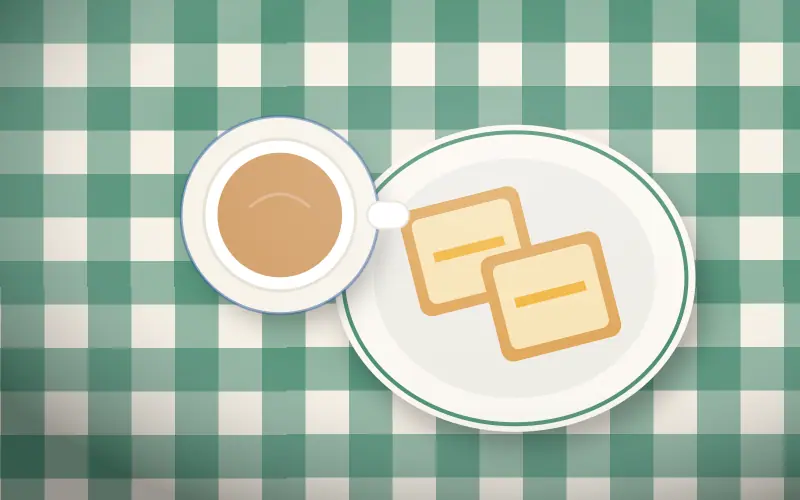
Tsui Wah (Tai Po)翠華（大埔） · Tai Po$42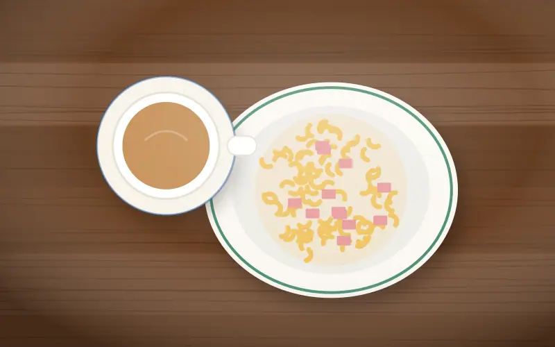
Tsui Wah Restaurant翠華餐廳 · Central$62 Hing Wah Street West Cooked Food Market興華街西熟食市場 · Cheung Sha Wan~$55
Hing Wah Street West Cooked Food Market興華街西熟食市場 · Cheung Sha Wan~$55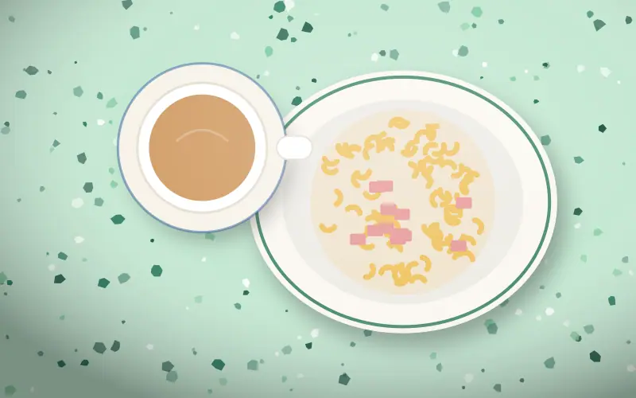
Tsui Wah (Sheung Shui)翠華（上水） · Sheung Shui$58 Tsui Wah (Kwun Tong)翠華（觀塘） · Kwun Tong$58
Tsui Wah (Kwun Tong)翠華（觀塘） · Kwun Tong$58  Mido Cafe美都餐室 · Yau Ma Tei$72
Mido Cafe美都餐室 · Yau Ma Tei$72  Tsui Wah (Tsuen Wan)翠華（荃灣） · Tsuen Wan$72
Tsui Wah (Tsuen Wan)翠華（荃灣） · Tsuen Wan$72 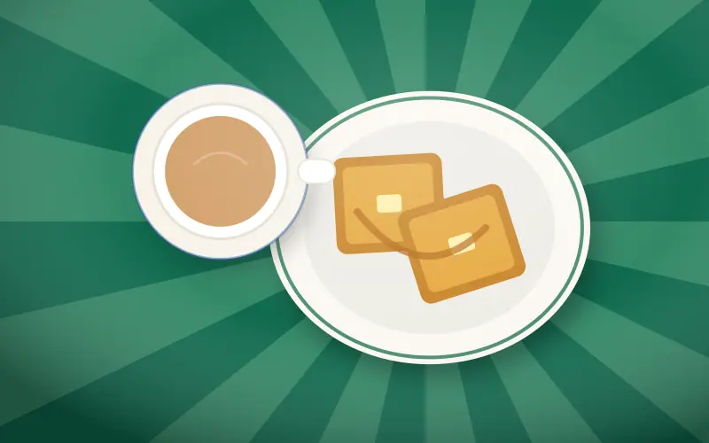
Tsui Wah (North Point)翠華（北角） · North Point$78 Tsui Wah (Kwai Fong)翠華（葵芳） · Kwai Fong$78
Tsui Wah (Kwai Fong)翠華（葵芳） · Kwai Fong$78  Tsui Wah (Sha Tin)翠華（沙田） · Sha Tin$78
Tsui Wah (Sha Tin)翠華（沙田） · Sha Tin$78  Tsui Wah (Tseung Kwan O)翠華（將軍澳） · Tseung Kwan O$78
Tsui Wah (Tseung Kwan O)翠華（將軍澳） · Tseung Kwan O$78 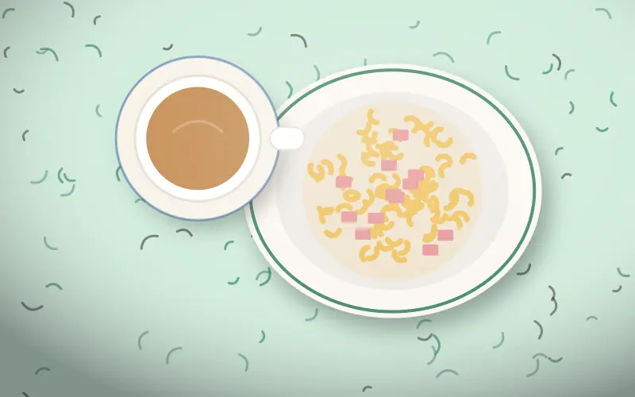
Tsui Wah (Tung Chung)翠華（東涌） · Tung Chung$78 Tsui Wah (Tuen Mun)翠華（屯門） · Tuen Mun$82
Tsui Wah (Tuen Mun)翠華（屯門） · Tuen Mun$82 More guides
Best meals under HK$50Cheap eats under HK$30Best value for moneyLate-night cheap eatsHidden gemsCheap breakfast in Hong KongRoast Meats 燒味Cha Chaan Teng 茶餐廳Dim Sum 點心Noodles 粉麵Congee 粥品Claypot 煲仔Cantonese 粵菜Seafood 海鮮Desserts 甜品Bakery 餅店Street Snacks 小食Vegetarian 素食HK Fast Food 快餐Rice Noodles 米線Thai 泰國菜Curry 咖喱Japanese 日式Vietnamese 越南菜Taiwanese 台灣菜Shanghainese 上海菜Dumplings & Northern 北方菜HK-style Western 港式西餐